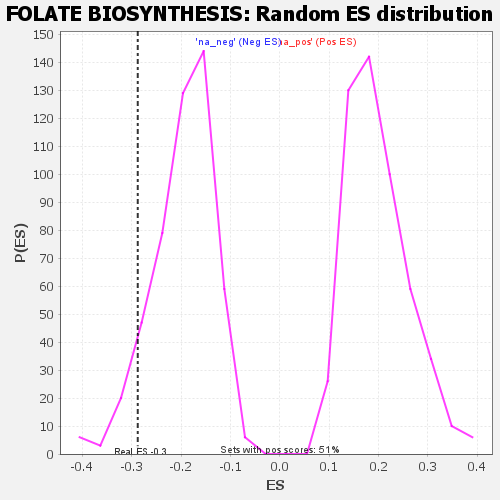

| | | Dataset | GSEA RNK clr Maaslin2 MucosalvsLuminal KO - ProximalColon.rnk |
| Phenotype | NoPhenotypeAvailable |
| Upregulated in class | na_neg |
| GeneSet | FOLATE BIOSYNTHESIS |
| Enrichment Score (ES) | -0.28804597 |
| Normalized Enrichment Score (NES) | -1.468713 |
| Nominal p-value | 0.070993915 |
| FDR q-value | 0.28120396 |
| FWER p-Value | 0.98 |
Table: GSEA Results Summary
 Fig 1: Enrichment plot: FOLATE BIOSYNTHESIS
Fig 1: Enrichment plot: FOLATE BIOSYNTHESIS
Profile of the Running ES Score & Positions of GeneSet Members on the Rank Ordered List

Fig 2: FOLATE BIOSYNTHESIS: Random ES distribution
Gene set null distribution of ES for FOLATE BIOSYNTHESIS